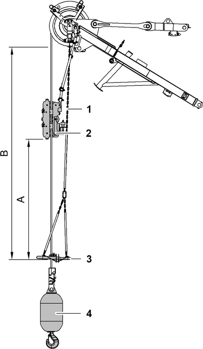

Vertical Line Finder am Spitzenausleger (36 t (79300 lb) ) auf Hauptausleger-Kopf montieren
Sicherstellen, dass folgende Voraussetzungen erfüllt sind:
❑ | Seil der Winde1/Winde2 ist vollständig am Spitzenausleger (36 t (79300 lb) ) auf Hauptausleger-Kopf eingeschert. |
❑ | Halterung des Vertical Line Finder ist am Spitzenausleger (36 t (79300 lb) ) auf Hauptausleger-Kopf montiert. |

Fig. 5797: Vertical Line Finder am Spitzenausleger (36 t (79300 lb) ) auf Hauptausleger-Kopf montieren
ACHTUNG
Unzulässige Montage des Vertical Line Finder bei 3-facher Einscherung!
Beschädigung des Vertical Line Finder und des Hauptausleger-Kopfs.
Sicherstellen, dass Vertical Line Finder bei 3-facher Einscherung nicht montiert ist. |
ACHTUNG
Unsachgemäße Montage des Vertical Line Finder bei 1-facher oder 2-facher Einscherung!
Beschädigung des Vertical Line Finder und des Hauptausleger-Kopfs.
Sicherstellen, dass Abstand A zwischen Seildurchführung 2 und Hubendschalterbügel 3 mindestens 2000 mm (6.56 ft) ist. |
Sicherstellen, dass Länge B der Hubendschalter-Kette 1 3777 mm (12.39 ft) ist. |
Federstecker 3 entfernen. |
Bolzen 1 entfernen. |
Halterungen 2 klappen nach unten. |
Bolzen 1 einsetzen. |
Bolzen 1 mit Federsteckern 3 sichern. |
Längsrohre 4 auf Halterungen 1 stecken. |
Schrauben 6 mit Scheiben 5 in Bohrungen einsetzen. |
Schrauben 6 mit Scheiben 5 und Muttern 3 sichern. |
Muttern 3 mit Kontermuttern 2 sichern. |
Querrohr 3 mit Halter 2 und Seildurchführung 9 auf Längsrohre 5 stecken. |
Schrauben 8 mit Scheiben 7 in Bohrung einsetzen. |
Schrauben 8 mit Scheiben 7 mit Muttern 6 sichern. |
Muttern 6 mit Kontermuttern 4 sichern. |
Bolzen 1 entfernen. |
Seilsicherungen 10 nach außen ziehen. |
Einbaupositionen der Seildurchführung | |
|---|---|
3x | 2x |
1x | |
Einbaupositionen der Seildurchführung
Seildurchführung 1 positionieren. |
Seildurchführung 1 mit Schraube 2 sichern. |
Seil in Seildurchführung 1 einlegen. |
Seilsicherungen 4 nach innen schieben. |
Seilsicherungen 4 mit Bolzen 3 sichern. |
Kupplung des Vertical Line Finder in Gerätestecker 1 einstecken. |
Stecker des Vertical Line Finder am Klemmkasten des Hauptausleger-Kopfs einstecken. |
Vertical Line Finder ist am Spitzenausleger (36 t (79300 lb) ) auf Hauptausleger-Kopf montiert. |
Vertical Line Finder ist einsatzbereit. |